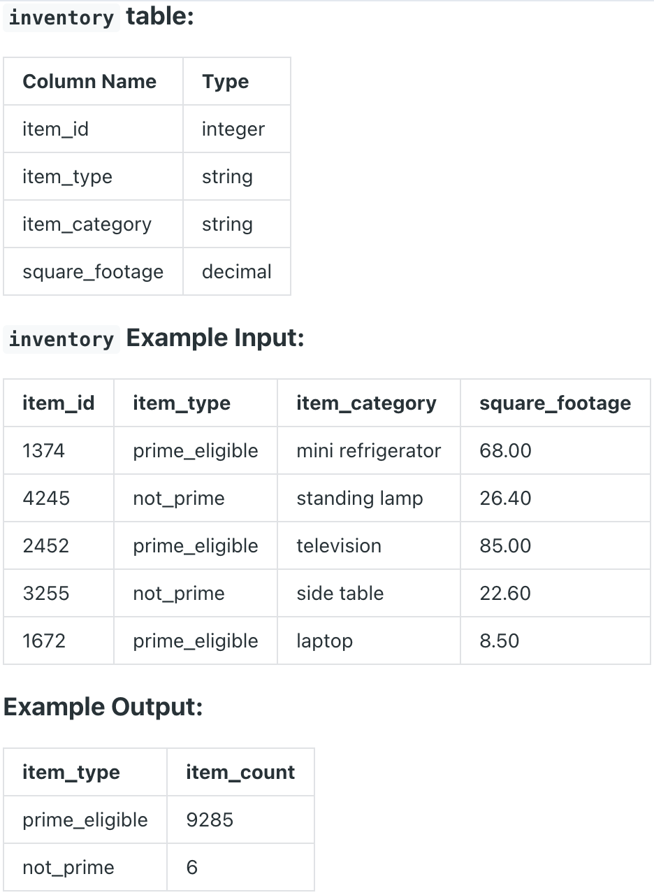

Question sourced from DataLemur.com.
Database: PostgreSQL
Amazon wants to maximize the number of items it can stock in a 500,000 square feet warehouse. It wants to stock as many prime items as possible, and afterwards use the remaining square footage to stock the most number of non-prime items.
Write a query to find the number of prime and non-prime items that can be stored in the 500,000 square feet warehouse. Output the item type with prime_eligible followed by not_prime and the maximum number of items that can be stocked.

/*
My strategy: Create a CTE for the total square footage occupied by
prime items versus non-prime items, and the total item count for
each category. Create another CTE to calculate the square footage
left in the warehouse after stocking all of the prime items (i.e.
prime square footage subtracted from 500,000 sq. ft.). Lastly,
create a CTE for the total non-prime items that can be stocked in
the remaining square footage. Union the item count of prime items
with the item count of non-prime items.
*/
WITH item_info AS (
SELECT item_type, COUNT(item_type) AS item_count,
SUM(square_footage) AS total_square_footage
FROM inventory
GROUP BY item_type
),
prime_space AS (
SELECT item_type,
FLOOR(500000 / total_square_footage) * item_count AS total_can_be_stored,
500000 - (
FLOOR(500000 / total_square_footage) * total_square_footage
) AS square_footage_remaining
FROM item_info
WHERE item_type = 'prime_eligible'
)
SELECT item_type,
FLOOR(
(SELECT square_footage_remaining FROM prime_space) / total_square_footage
) * item_count AS total_can_be_stored
FROM item_info
WHERE item_type = 'not_prime'
UNION
SELECT item_type, total_can_be_stored
FROM prime_space
ORDER BY total_can_be_stored DESC;